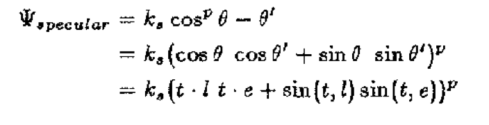

Physically Based Hair Rendering
Visualizing different fur rendering techniques such as Marschner (2003) model and the Yan (2015) model and comparing rendering speed and quality. Team: Ja Wattanawong, Briana Zhang, Richard Liu, Yi Liu
Abstract
In our project, we worked on physically-based rendering of hair by implementing the Kajiya-Kay, thin dielectric, and Marschner models of hair as BSDFs in the Mitsuba renderer. Kajiya-Kay’s model assumes that light diffracts in a cone around the hair fiber, which causes the primary specular component to fall off more gently in the direction of reflection. With the thin dielectric model, the effects of multiple reflections inside the hair fiber create a secondary halo effect which renders hair more realistically. Finally, we implemented the Marschner model which considers three scattering modes: reflect (R), transmit-transmit (TT), and transmit-reflect-transmit (TRT). The Marschner model also considers other elements of the hair geometry such as angled scales which shift the specular highlights, and absorption within the fiber. We implemented these three models with decent rendering results and compared the differences between them.
Kajiya-Kay Model

Kajiya-Kay’s model modifies the Phong specular term to only depend on the angle to the hair fiber and uses the following equation:
The variables in this equation are illustrated in the diagram above. Most importantly, t is the hair tangent, e is the vector that points to the camera, l is the vector that points to the light source, and theta/theta prime refers to the angles between these vectors and the tangent. K_s is the specular term’s coefficient and p is the Phong exponent that controls the power falloff with increasing angular difference.
We implemented the specular term above, and made some improvements to improve perceived visual quality. Namely, we reduced the k_s coefficient to account for the diffraction around all directions of the cone and ensure there isn’t too much light in the scene. We also pruned backscatter rays (where dot(wi,wo) > 0 in the local frame) since the reflection should only go one way.
These are our final results. The Phong model (included with Mitsuba) is included for comparison:
Phong Model

Kajiya-Kay
The end result has a more vivid color, softer highlights overall, and a diffraction pattern that extends down the hair fibers compared to Phong’s model. In comparison, the lighting in Phong’s model is much harsher.
Thin Dielectric Model
The Marschner paper begins with the assumption that hair is a thin dielectric cylinder, and so we tried modeling with that first to see the difference. Using the thin dielectric model, we end up with a secondary halo due to transmitted and reflected terms.
The thin dielectric model is similar to the glass model that we implemented in class. With probability R, R being the Fresnel term, light reflects. Otherwise, it refracts. Reflectance is the same as what we do in class with the resulting vector being Vector(-wi.x, -wi.y, wi.z), whereas for transmittance, it is simply Vector(-wi.x, -wi.y, -wi.z).
Ultimately, the result does not look realistic since it is essentially thin strands of glass. However, you do begin to see the secondary halo caused by the additional transmittance interactions. The rendered result has no color because it does not have the diffuse term.
Phong Model

Kajiya-Kay
Marschner Model
Problems Encountered
The biggest challenge we faced was understanding exactly how Mitsuba worked. It was particularly hard figuring out how to compile the renderer and write a BSDF file since there was little documentation and online resources explaining it, making it unnecessarily difficult when learning how the renderer was actually interacting with its files. The most common way we fixed these issues were through trial and error, often resorting to print statements when we wanted to debug the code to understand what it was actually computing.
The first major issue we encountered was finding a working version of Mitsuba that could compile for each of us consistently. In the first week of working, we had gone through a modifiable version of Mitsuba 2 (but was missing a Hair class) and an application-only version of Mitsuba 1. When we did find a modifiable version of Mitsuba 1 we could fork from, since our personal computers were split among MacOS and Linux, we often had build problems and had to find solutions to each of them. However, issues kept persisting, so we ended up building a version supported by Docker to resolve them.
In our earlier attempts at Marschner BSDFs, we faced another major issue where we ran into many specs of light in the hair renderings that were too bright.

This issue was mentioned in the Marschner paper as due to discontinuities in the mathematical model in the TRT component. In order to fix this issue, we turned off importance sampling and also increased the sampling rate.
Some other smaller issues that popped up were invalid sample point errors, which we realized were caused by invalid PDF calculations when print debugging, and missing color in the image renderings which we realized were caused by missing diffuse components.
References
Marschner Model (2003): http://www.graphics.stanford.edu/papers/hair/hair-sg03final.pdf
Kajiya Model (1989): https://www.cs.drexel.edu/~david/Classes/CS586/Papers/p271-kajiya.pdf
Team Member Contributions
Initially, the work was split up such that Briana and Yi figured out how the Mitsuba code base worked while Ja and Richard read the papers to understand the mathematical background more. Briana and Yi first implemented a simple Mirror BSDF, and then Ja implemented the Kajiya-Kay model. Briana then created the modified thin dielectric model while Yi and Richard started working on the Marschner model. In the middle, Briana’s OS updated and Ja created a Docker file that allowed everyone to work properly. Everyone worked together in order to finish implementing the initial Marschner model. Yi added the diffuse component to the Marschner model. Ja turned off importance sampling and increased sampling rate in order to fix our dotting issues.